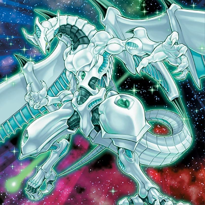
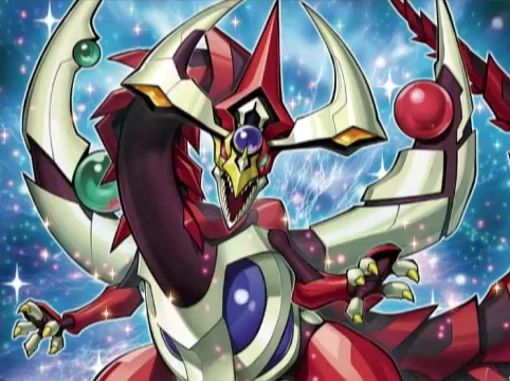
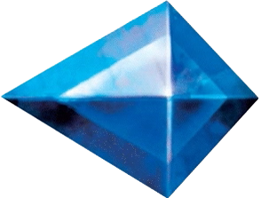
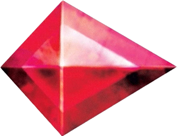

Puedes reducir a 0 el daño de batalla que recibas de un ataque que involucre a un Monstruo de Péndulo que controles. Durante tu End Phase: puedes destruir esta carta y, si lo haces, añade a tu mano 1 Monstruo de Péndulo con 1500 ATK o menos en tu Deck. Sólo puedes usar cada Efecto de Péndulo de "Dragón de Péndulo de Ojos Anómalos" una vez por turno.
Dragón de la Estrella Fugaz


[Dragón/Sincro/Efecto]
1 Monstruo de Sincronía Cantante + "Dragón de Polvo de Estrellas"Una vez por turno: puedes excavar las 5 cartas de la parte superior de tu Deck, barajarlas de nuevo al Deck, y además este turno el número máximo de ataques que esta carta puede realizar por Battle Phase es igual al número de monstruos Cantantes que hayas excavado. Una vez por turno, cuando es activada una carta o efecto que fuera a destruir una o más cartas en el Campo (Efecto Rápido): puedes negar el efecto y, si lo haces, destrúyela. Una vez por turno, cuando un monstruo del adversario declara un ataque: puedes seleccionar el monstruo atacante; destierra esta carta y, si lo haces, niega ese ataque. Durante la próxima End Phase: Invoca de Modo Especial esta carta desterrada por este efecto
ATK/330 DEF/2500
Dragón de Péndulo de Ojos Anómalos


4

4
[Dragón/Péndulo/Efecto]
Si esta carta batalla con un monstruo de tu adversario, cualquier daño de batalla que esta carta inflija a tu adversario se duplica.
ATK/2500 DEF/2000